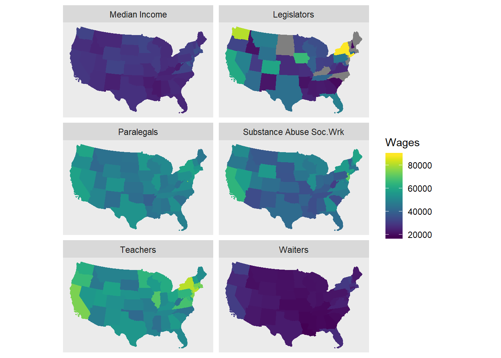

library(tidyverse) # Tidyverse for Tidy Data
library(readxl)
library(tmap) # Thematic Mapping
library(tmaptools)
library(tigris) # Get Census Geography Poloygons
library(sf)
library(tidycensus)
library(viridis) # Loading required package: viridisLite
library(ggplot2) #-- version 2.2.1.90000
#devtools::install_github("tidyverse/ggplot2")Using the tigris package get Census Tiger shapefiles for census geographies. Tigris will return the shapefile in the sf, or simple features, format.
us_geo <- tigris::states(class = "sf")
# us_geo_spdf <- states() # spdf uses @data slots -- old schoolI’ve already downloaded and stored some data from the Bureau of Labor Statistics. Thoses data are stored in an excel file in the data directory of the repository: data/OES_Report.xlsx. The goal is to attach this data to the previously downloaded shapefiles.
But you may be intersted in how I gathered the data. below are some summary notes documenting my steps of gathering the data from the Bureau of Labor Statistics.
https://data.bls.gov/oes/#/occGeo/One%20occupation%20for%20multiple%20geographical%20areas
One occupation for multiple geographical areas
Mental Health and Substance Abuse Social Workers (Also, Secondary School Teacher, Waiter, Legislator, and Paralegals)
State
All States in this list
Annual Mean wage
Read the Data in with the RStudio “Import Dataset” wizard available in the Environment tab. This will generate the code below and ensure the import
Salary4Helpers <-
read_excel("data/OES_Report.xlsx",
col_types = c("text", "numeric"),
skip = 4)
# Salary4Helpersread in the XLXS files for the other occupations: Secondary School Teacher, Waiter, Legislator, and Paralegals
legislators <-
read_excel("data/OES_legislator.xlsx",
col_types = c("text", "numeric"),
skip = 4)
paralegals <-
read_excel("data/OES_paralegals.xlsx",
col_types = c("text", "numeric"),
skip = 4)
teachers <-
read_excel("data/OES_secondary_school_teacher.xlsx",
col_types = c("text", "numeric"),
skip = 4)
waiters <-
read_excel("data/OES_waiters.xlsx",
col_types = c("text", "numeric"),
skip = 4)Before we join the BLS data to the shapefile we need to transform the structure of the downloaded BLS data
BlsWage_ToJoin <- Salary4Helpers %>%
rename(Area = "Area Name") %>%
rename(wages = "Annual mean wage(2)") %>%
mutate(State = gsub("\\(\\d{7}\\)", "", Area)) %>%
filter(wages != "NA_character_") %>%
select(State, wages)
#BlsWage_ToJoinlegislators <- legislators %>%
rename(Area = "Area Name") %>%
rename(wages = "Annual mean wage(2)") %>%
mutate(State = gsub("\\(\\d{7}\\)", "", Area)) %>%
filter(wages != "NA_character_") %>%
select(State, wages)
paralegals <- paralegals %>%
rename(Area = "Area Name") %>%
rename(wages = "Annual mean wage(2)") %>%
mutate(State = gsub("\\(\\d{7}\\)", "", Area)) %>%
filter(wages != "NA_character_") %>%
select(State, wages)
teachers <- teachers %>%
rename(Area = "Area Name") %>%
rename(wages = "Annual mean wage(2)") %>%
mutate(State = gsub("\\(\\d{7}\\)", "", Area)) %>%
filter(wages != "NA_character_") %>%
select(State, wages)
waiters <- waiters %>%
rename(Area = "Area Name") %>%
rename(wages = "Annual mean wage(2)") %>%
mutate(State = gsub("\\(\\d{7}\\)", "", Area)) %>%
filter(wages != "NA_character_") %>%
select(State, wages)Using the append_data() function of the tmaptools package, append BLS data to the previously loaded shape object
paralegals <- append_data(us_geo, paralegals,
key.shp = "NAME",
key.data = "State")## Under coverage: 3 out of 56 shape features did not get appended data. Run under_coverage() to get the corresponding feature id numbers and key values.## Over coverage: 1 out of 54 data records were not appended. Run over_coverage() to get the corresponding data row numbers and key values.waiters <- append_data(us_geo, waiters,
key.shp = "NAME",
key.data = "State")## Under coverage: 3 out of 56 shape features did not get appended data. Run under_coverage() to get the corresponding feature id numbers and key values.
## Over coverage: 1 out of 54 data records were not appended. Run over_coverage() to get the corresponding data row numbers and key values.teachers <- append_data(us_geo, teachers,
key.shp = "NAME",
key.data = "State")## Under coverage: 3 out of 56 shape features did not get appended data. Run under_coverage() to get the corresponding feature id numbers and key values.
## Over coverage: 1 out of 54 data records were not appended. Run over_coverage() to get the corresponding data row numbers and key values.legislators <- append_data(us_geo, legislators,
key.shp = "NAME",
key.data = "State")## Under coverage: 15 out of 56 shape features did not get appended data. Run under_coverage() to get the corresponding feature id numbers and key values.HelperShapeObject <- append_data(us_geo, BlsWage_ToJoin,
key.shp = "NAME",
key.data = "State")## Under coverage: 3 out of 56 shape features did not get appended data. Run under_coverage() to get the corresponding feature id numbers and key values.Filter to only the contiguous 48 states + D.C.
contiguous_states <- HelperShapeObject %>%
filter(REGION != 9) %>%
filter(STUSPS != "AK") %>%
filter(STUSPS != "HI")
paralegals <- paralegals %>%
filter(REGION != 9) %>%
filter(STUSPS != "AK") %>%
filter(STUSPS != "HI")
waiters <- waiters %>%
filter(REGION != 9) %>%
filter(STUSPS != "AK") %>%
filter(STUSPS != "HI")
teachers <- teachers %>%
filter(REGION != 9) %>%
filter(STUSPS != "AK") %>%
filter(STUSPS != "HI")
legislators <- legislators %>%
filter(REGION != 9) %>%
filter(STUSPS != "AK") %>%
filter(STUSPS != "HI")B01003_001E = Total Population B06011_001E = Median income in the past 12 months –!!Total:
variables_census <- load_variables(2015, "acs5", cache = TRUE)us_pop <-
get_acs(geography = "state",
variables = "B06011_001E",
# state = "NC",
geometry = FALSE)## Please note: `get_acs()` now defaults to a year or endyear of 2016.us_pop <- us_pop %>%
filter(NAME != "Alaska") %>%
filter(NAME != "Hawaii") %>%
filter(NAME != "Puerto Rico")appended_population_and_states_shapefile <- append_data(contiguous_states, us_pop,
key.shp = "GEOID",
key.data = "GEOID")## Keys match perfectly.Wrangle the data into a tall format and single data frame
contiguous_states_slim <- contiguous_states %>%
select(GEOID, NAME, wages, geometry) %>%
mutate(category = "Substance Abuse Soc.Wrk") %>%
rename(variable = wages)population_states_slim <- appended_population_and_states_shapefile %>%
select(GEOID, NAME, estimate, geometry) %>%
mutate(category = "Median Income") %>%
rename(variable = estimate)paralegals <- paralegals %>%
select(GEOID, NAME, wages, geometry) %>%
mutate(category = "Paralegals") %>%
rename(variable = wages)
waiters <- waiters %>%
select(GEOID, NAME, wages, geometry) %>%
mutate(category = "Waiters") %>%
rename(variable = wages)
teachers <- teachers %>%
select(GEOID, NAME, wages, geometry) %>%
mutate(category = "Teachers") %>%
rename(variable = wages)
legislators <- legislators %>%
select(GEOID, NAME, wages, geometry) %>%
mutate(category = "Legislators") %>%
rename(variable = wages)To combine all the smaller data frames into one tall format, bind the rows.
base::rbind works. dplyr::bind_rows did not work.
tall <- rbind(contiguous_states_slim,
population_states_slim,
paralegals,
waiters,
teachers,
legislators)Make the category variable a categorical factor with levels. This will improve the order of the facets when displayed.
display_levels <- c("Median Income", "Legislators",
"Paralegals", "Substance Abuse Soc.Wrk",
"Teachers", "Waiters")
tall <- tall %>%
mutate(category = factor(category, display_levels)) %>%
rename(Wages = variable)facet_wrap works better than facet_grid because there is more control over the display of the rows and columns. The first example, below, does not run. I keep it only to document something that could work.
tall %>%
ggplot(aes(fill = variable, color = variable)) +
geom_sf() +
coord_sf(crs = 5070) +
scale_fill_viridis(option = "viridis", direction = -1) +
scale_color_viridis(option = "viridis", direction = -1) +
facet_grid(. ~ category)tall %>%
ggplot(aes(fill = Wages, color = Wages)) +
geom_sf() +
coord_sf(crs = 5070) +
scale_fill_viridis(option = "viridis", direction = -1) +
scale_color_viridis(option = "viridis", direction = -1) +
facet_wrap(~ category, nrow = 3, ncol = 2)
ggsave("facet_map.png", width = 8, height = 8, units = "in")